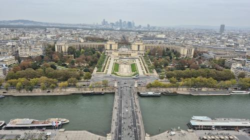

OSM building 5013364 — Tour Eiffel
Photo 3c211ec5-64ff-4d9a-aa57-daacf4dd2549 · 15.81 m from footprint · camera delta 6.28°
License: etalab-2.0 · 2025-10-10T08:15:43.522000+00:00
Identity is not yet verified; do not apply this image to a building.